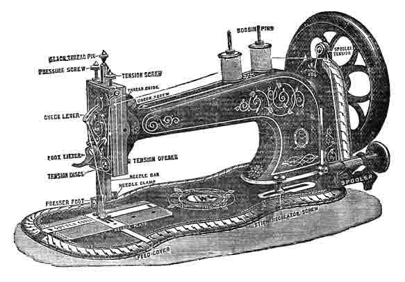
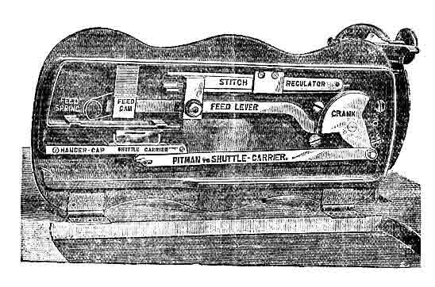
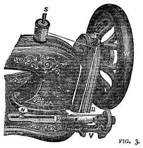

THE NEEDLEBAR
Online Manuals Section
DIRECTIONS AND SUGGESTIONS FOR WORKING
THE
"WARWICK"
FAMILY AND MEDIUM
(LOCK-STITCH)
SEWING MACHINE
Part One
Purchasers should be able to make their machines quite useful
in a few days' time; if they do not, it is for want of proper instruction for
which they will please apply to the party who furnished the Machine.
SOLE MAKERS:
HENRY WALLWORK & Co.,
CITY SEWING MACHINE WORKS
HILTON STREET
Show Rooms and Offices - China Lane, PICCADILLY,
and
UNION BRIDGE FOUNDRY, CHARTER STREET, MANCHESTER.
_________________________
| Telephone - No. 567 |
Telegraphic Address --- "Foundry,
Manchester"
|
Refer to these cuts for the Technical
Names of the parts of the Machine.

This Cut represents the Machine
turned on its hinges, showing the parts on the underside.

THE AUTOMATIC
SPOOL OR REEL WINDER
<--------->
The most Mechanical Spool Winder
in the World.
To Wind the Bobbin or Spool for
the Shuttle
|
The Screw at the end of Shaft that
secures the Balance Wheel is a left-
handed screw, and to take off the
Balance Wheel
|

|
You must turn the Screw from
left to right, just the opposite to
the usual direction of Screws.
|
Fix the reel in the winder, press the winder so that
the India-rubber pulley comes into contact with the balance wheel, place the
bobbin upon the pin (S), pass the cotton through the hole at (T)
down to the winder, underneath the straight wire (U) from back to front,
then from right to left behind the cotton which descends to put a twist in
the cotton, and pas it through the hole at the left end of the reel. Turn
the wheel towards you with the right hand, holding the end of the cotton with
the left, until it is held by the reel, then break off the end, turn the wheel
again until two rows are wound upon the reel, raise the pressure-plate so
that it comes into contact with the reel, and proceed to treadle until the
reel is full. It is important that the straight wire be kept smooth and free
from rust.
TO COMMENCE SEWING
Open the left-hand shuttle cover, place
the shuttle in its carrier, leaving out about three inches of thread, and close
the slide plate within about an eighth of an inch; draw about three inches of
thread downward from the check-lever and through the eye of the needle, holding
the end with the left hand, allowing to to be slack from the hand to the
needle, while you turn the balance wheel towards you, until the needle moves
down and up again to its highest point; pull the needle-thread gently, and
the shuttle-thread will appear with it, then close the shuttle cover. Leave
the threads to the left across the feed points under the foot, place the fabric
under the needle, lower the lifter, and commence sewing. Having made a few stitches,
stop and examine them. Our Machines make the lock-stitch thus - It
is a stitch that will neither rip of ravel. The tension should be thoroughly
understood; if the thread is straight or in loops on the under surface of the
fabric, thus -
turn the tension screw from right to left to loosen the needle thread, or tighten
the shuttle thread as instructed.
TO ADJUST THE NEEDLE
Allow the needle-bar to rest at its
highest point, and loosen the needle clamp nut. Take the needle between the
thumb and forefinger of the left hand, having its long groove towards you, and
put the point down through the hole in the needleplate; turn the wheel gently
towards you, while you guide the needle under the needle-clamp; then tighten
the clamp-nut; with the left hand insert the point of a fine needle into the
eye, resting it on the needle-plate; loosen the clamp-nut, and pressing the
fine needle into the eye in a direct line from you, turn the wheel gently towards
you, until the gauge mark (a line graven in the needle-bar, near the top) is
level with the top of the arm; then tighten the clamp-nut.
TO ALTER THE LENGTH OF STITCH
The stitch-regulator screw is adjustable
in a slot, immediately to the left of the winder. To lengthen the stitch,
loosen the screw and move it to the right; to shorten the stitch, move
it to the left. After adjusting the length of stitch, tighten the screw.Note.-
When the screw is at the end of the slot, and the stitch not as short as desired,
change the screw into the hole at the end of the regulator slide, then move
it still further to the left.
TO REMOVE THE WORK
Stop the Machine with the
needle-bar at its highest point, raise the foot lifter, draw the fabric from
the left side of the presser-foot upwards about three inches; then cut the
threads, leaving the ends long enough to re-commence sewing. Seams requiring
to be extra strong at the ends should be secured by taking a few stitches in
the opposite direction before removing it, the same as in hand sewing.
TO OIL THE MACHINE
If the machine is only used occasionally,
it requires but little oil and in the following places: The sides of the needle-bar,
the four holes on the top of the arm, the two holes on the side of the arm,
the shuttle carrier slide, both ends of the shuttle-carrier pitman underneath
the machine, and all other joints and slides having motion. After oiling, put
the machine in rapid motion for a few seconds, without sewing, and wipe off
all the superfluous oil.Note.- If the machine is in constant use, it ought to
be well oiled twice a day in all the places enumerated above, and also on the
following places: Each end of the treadle where it rests upon the centres, both
ends of the wooden pitman, the hinge of the check-lever, the stitch regulator
slide, the spooler-spindle, and the top of the lifter, inside the slot. Also
the stand wheel, and all other joints having motion.